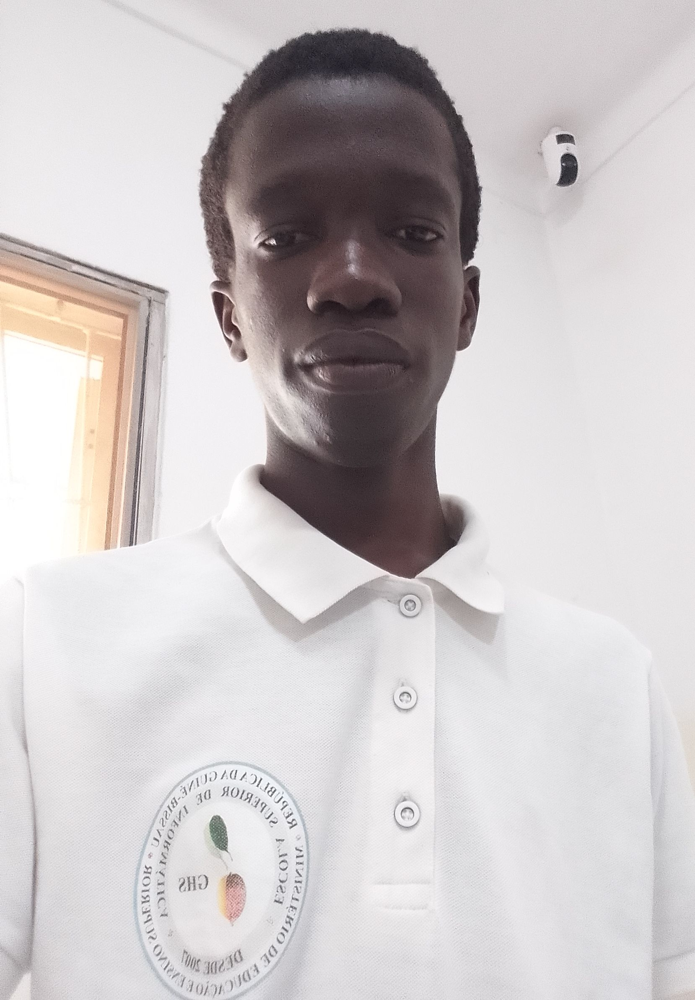

Carlos Bidonga é um jovem determinado e apaixonado pela tecnologia, com destaque na área de redes de computadores. Atualmente, é estudante de Engenharia Informática, onde vem desenvolvendo competências sólidas em sistemas, programação e infraestrutura tecnológica.
Desde cedo, demonstrou interesse pelo funcionamento das redes e da comunicação digital, o que o levou a se especializar na configuração e gestão de redes de computadores.
Possui experiência prática com equipamentos como MikroTik e TP-Link, atuando na implementação, manutenção e otimização de redes, incluindo sistemas de hotspot e PPPoE para fornecimento de internet.
Além da sua atuação na área tecnológica, Carlos também possui formação como radista militar, o que lhe proporcionou disciplina, responsabilidade e conhecimentos avançados em sistemas de comunicação. Essa experiência fortaleceu ainda mais sua capacidade de trabalhar com tecnologias de transmissão de dados e redes.
Com um perfil resiliente e focado, Carlos busca constantemente aprimorar suas habilidades e acompanhar a evolução tecnológica. O seu objetivo é tornar-se um profissional de excelência na área de redes e engenharia informática, contribuindo com soluções inovadoras e eficientes para o desenvolvimento tecnológico.